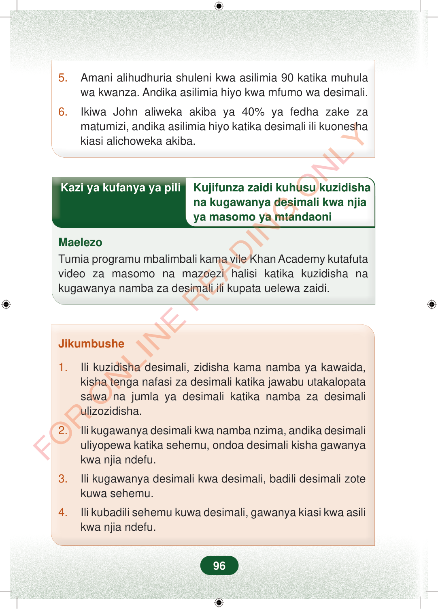

5.Amani alihudhuria shuleni kwa asilimia 90 katika muhulawa kwanza. Andika asilimia hiyo kwa mfumo wa desimali.6.Ikiwa John aliweka akiba ya 40% ya fedha zake zamatumizi, andika asilimia hiyo katika desimali ili kuoneshakiasi alichoweka akiba.Kazi ya kufanya ya piliKujifunza zaidi kuhusu kuzidishana kugawanya desimali kwa njiaya masomo ya mtandaoniMaelezoTumia programu mbalimbali kama vile Khan Academy kutafutavideo za masomo na mazoezi halisi katika kuzidisha nakugawanya namba za desimali ili kupata uelewa zaidi.Jikumbushe1.Ili kuzidisha desimali, zidisha kama namba ya kawaida,kisha tenga nafasi za desimali katika jawabu utakalopatasawa na jumla ya desimali katika namba za desimaliulizozidisha.2.Ili kugawanya desimali kwa namba nzima, andika desimaliuliyopewa katika sehemu, ondoa desimali kisha gawanyakwa njia ndefu.3.Ili kugawanya desimali kwa desimali, badili desimali zotekuwa sehemu.4.Ili kubadili sehemu kuwa desimali, gawanya kiasi kwa asilikwa njia ndefu.96
5. Amani alihudhuria shuleni kwa asilimia 90 katika muhula wa kwanza. Andika asilimia hiyo kwa mfumo wa desimali.
6. Ikiwa John aliweka akiba ya 40% ya fedha zake za matumizi, andika asilimia hiyo katika desimali ili kuonesha kiasi alichoweka akiba.
Kazi ya kufanya ya pili Kujifunza zaidi kuhusu kuzidisha
na kugawanya desimali kwa njia ya masomo ya mtandaoni
Maelezo Tumia programu mbalimbali kama vile Khan Academy kutafuta video za masomo na mazoezi halisi katika kuzidisha na kugawanya namba za desimali ili kupata uelewa zaidi.
Jikumbushe
1. Ili kuzidisha desimali, zidisha kama namba ya kawaida, kisha tenga nafasi za desimali katika jawabu utakalopata sawa na jumla ya desimali katika namba za desimali ulizozidisha.
2. Ili kugawanya desimali kwa namba nzima, andika desimali uliyopewa katika sehemu, ondoa desimali kisha gawanya kwa njia ndefu.
3. Ili kugawanya desimali kwa desimali, badili desimali zote kuwa sehemu.
4. Ili kubadili sehemu kuwa desimali, gawanya kiasi kwa asili kwa njia ndefu.
96
5.Amani alihudhuria shuleni kwa asilimia 90 katika muhula wa kwanza.Andika asilimia hiyo kwa mfumo wa desimali.6.Ikiwa John aliweka akiba ya 40% ya fedha zake za matumizi, andika asilimia hiyo katika desimali ili kuonesha kiasi alichoweka akiba.Kazi ya kufanya ya piliKujifunza zaidi kuhusu kuzidisha na kugawanya desimali kwa njia ya masomo ya mtandaoniMaelezoTumia programu mbalimbali kama vile Khan Academy kutafuta video za masomo na mazoezi halisi katika kuzidisha na kugawanya namba za desimali ili kupata uelewa zaidi.Jikumbushe1.Ili kuzidisha desimali, zidisha kama namba ya kawaida, kisha tenga nafasi za desimali katika jawabu utakalopata sawa na jumla ya desimali katika namba za desimali ulizozidisha.2.Ili kugawanya desimali kwa namba nzima, andika desimali uliyopewa katika sehemu, ondoa desimali kisha gawanya kwa njia ndefu.3.Ili kugawanya desimali kwa desimali, badili desimali zote kuwa sehemu.4.Ili kubadili sehemu kuwa desimali, gawanya kiasi kwa asili kwa njia ndefu.